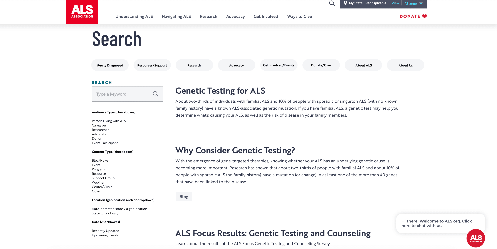
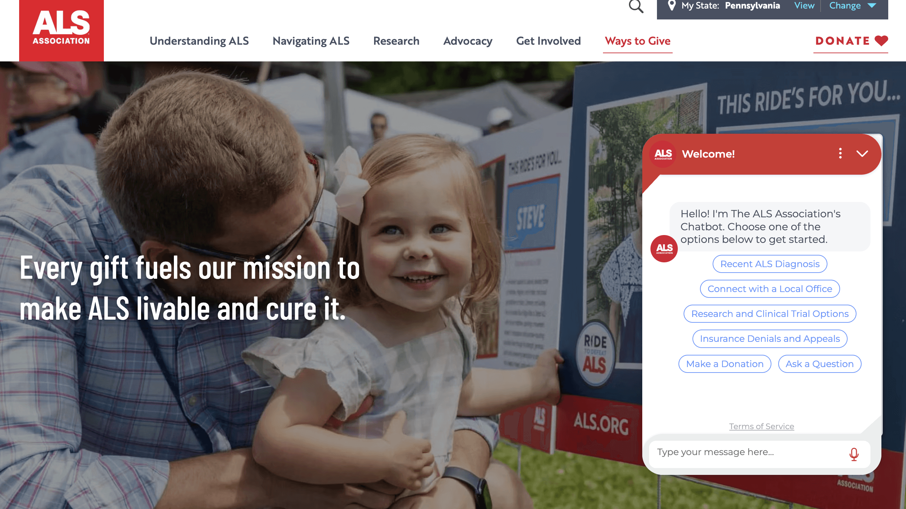
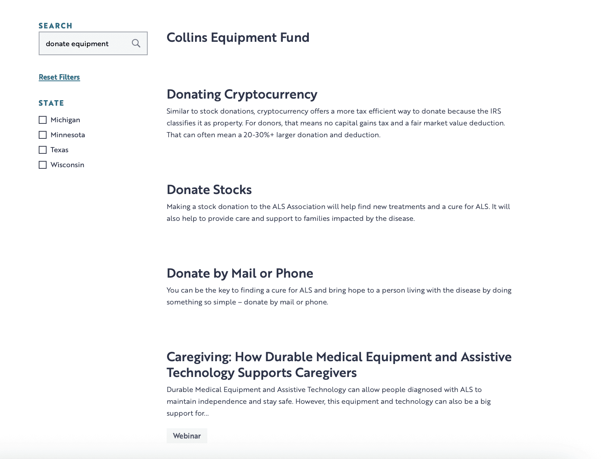

Homepage Redesign + Global Block System
Redesigned the ALS Association homepage into a dynamic mission hub — embedding donation and geolocation tools to drive donor conversion and local engagement.
View case study →Case Study
From a failing chatbot to a strategic search system — how data exposed a broken user experience and drove a mission-critical rebuild.
Visit Live Site →
For the past 4 years, our primary tool for helping users find what they needed on our site was an AI chatbot. On paper, it was a reasonable solution — a conversational interface that could direct users to local resources, clinical trials, donation options, and support programs. In practice, it wasn't working. And the data made that impossible to ignore.
Over a 6 month period:
The button click data told an equally important story. The user intent was there. The tool just wasn't meeting it:


Rather than treating search and the chatbot as separate issues, I proposed a unified search optimization initiative that would retire the chatbot and replace its intended function with something structurally more feasible for the organization.
| Metric | Value | Explanation |
|---|---|---|
| Chatbot views | 1,926,429 | Nearly every site visitor encountered it |
| Unique views | 1,075,274 | Over a million individual users saw it |
| Engaged users | 5,114 | 0.48% chose to interact |
| Helpful conversations | 417 | Of those who gave feedback, only 417 users rated the bot helpful |
| Not helpful conversations | 469 | More failures than successes among those who rated |
| Recurring donation cancellations | 190 | Direct negative mission impact vs. respecting donor intent |
| No match requests | 39 | Users asking questions the system couldn't answer |
| Button | Clicks | Intent |
|---|---|---|
| Ask a question | 1,837 | Open-ended |
| Find local support | 1,554 | Location-based resources — persistent failure point |
| Recent ALS diagnosis | 972 | Newly diagnosed — seeking immediate guidance |
| Connect with a local office | 902 | Direct local connection — repeatedly unresolved |
| Make a donation | 540 | Intent present vs. 190 cancellations |
| Research and clinical trials | 339 | High stakes research navigation |
| Local resources | 287 | Direct local connection — repeated failures |
| Clinical trials for patients | 191 | Specific, precise needs requiring accurate and up-to-date answers |
| Assistance grants program | 162 | Specific program queries — high consequence if wrong |
| Equipment donation | 129 | Specific program — clear intent |
| Find an ALS clinic | 123 | Clear intent — critical for newly diagnosed |
| Participate in research | 115 | Research engagement — underserved |
| Insurance denials and appeals | 100 | High stakes, high-precision — worst place to fail |
The table below is partially filled in — add search behavior and failure modes for the remaining user types once that research is complete.
| User Type | Search Behavior | What Failure Looks Like |
|---|---|---|
| Newly diagnosed patients & caregivers | Immediate need — local clinics, resources, programs | Dead ends at the highest-stakes moments of their journey |
| Patients managing ongoing care | Research updates, clinical trials, assistance programs, events | Outdated or irrelevant results eroding trust |
| Donors & prospects | Giving options, events, impact stories | Buried results, cancellation pathway |
| Assistive technology users | Search as primary navigation method | Failures hit harder with no alt path |
| Researchers looking for funding opportunities | — | — |
| Corporate partners | — | — |
| Event participants & volunteers | — | — |
| Advocates | — | — |
Establishing a weighting framework that elevates mission-critical content in search rankings. Clinical resources, flagship programs, and primary giving pages should surface above tangential blog posts or archived event pages for relevant queries.
To fill in: your weighting criteria — recency, content type, manual priority flags, engagement signals, etc.
Implementing a tagging system that serves two purposes: improving search indexing by giving the engine richer signals about what each page is and who it's for, and enabling a content review workflow so the content team can flag pages for update, archival, or suppression. This addresses the root cause of outdated content surfacing in results — and gives the content team ownership over search quality for the first time.
Adding filters to the main search results page so users can narrow by content type, topic, audience, or other relevant facets. A newly diagnosed patient searching for clinical resources and a donor searching for events are using the same search bar with very different intent — filters let them each quickly find what they came for.
Giving the marketing and content team the ability to pin specific pages to the top of results for defined search terms. Ensures that high-priority queries — the organization's name, flagship program names, key disease terms, major events — always surface the right destination first. Directly addresses the stakeholder frustration that high-priority pages had no guaranteed visibility.
Introducing AI-assisted search to handle the gap between how users type and how content is labeled. Natural language queries, misspellings, synonyms, and intent-based searches will be interpreted and matched more intelligently — delivering on the promise the chatbot was supposed to fulfill, through a mechanism that's transparent, accurate, and doesn't strand users when it doesn't have an answer.
The first three rows carry real baseline data from the chatbot. The remaining rows need real current values and targets once search analytics are in place.
| Metric | Current Baseline | Target |
|---|---|---|
| Chatbot engagement rate | 0.48% | Retired — replaced by search |
| Helpful vs. not helpful conversations | 417 helpful / 469 not helpful | Retired |
| Recurring donation cancellations via chatbot | 190 / 6 months | Eliminated |
| Zero-result search rate | — | — |
| Search click-through rate | — | — |
| % of searches using filters | N/A | — |
| Pinned content impressions | N/A | — |
| Content review cycle — avg. age of flagged pages | — | — |
| User satisfaction with search | — | — |
Open questions to work through as this project progresses — add your reasoning under each.
Add your answer — e.g., what ships first and why: highest impact for lowest effort?
Add your answer — e.g., who decides what's high-priority, and what signals feed into it?
Add your answer — e.g., how did you decide which filter categories to offer?
Add your answer — e.g., vendor evaluation, platform-native feature, or custom build, and what criteria you're using given the health context.
Add your answer — they're both stakeholders and end users of the tagging and review tools.
Add your answer — define your before/after metrics.
The chatbot data was clarifying in a way that doesn't always happen in product work. Sometimes the case for change is ambiguous — competing signals, reasonable disagreements, legitimate arguments for iteration over replacement. This wasn't that. The numbers told a clean story, and the right response was to act on them rather than rationalize around them.
What this project has reinforced is something I try to bring to every initiative: the most important question isn't "how do we improve this feature" — it's "is this the right feature at all?" The chatbot existed because at some point it seemed like a good solution. Nobody went back to ask whether it was still a good solution, or whether it had ever really worked. Pulling that thread — and being willing to follow the data to an uncomfortable conclusion — is what created the opening for something better.
The AI-assisted search workstream is the one I'm approaching most carefully. The chatbot's failure is partly a cautionary tale about deploying AI in a health context without sufficient accuracy and fallback design. The replacement has to do better — not just technically, but in terms of what happens when it doesn't know the answer. A search system that returns no results is honest. A chatbot that confidently gives wrong information to a patient navigating an ALS diagnosis is something else entirely.
Selected projects that reflect my approach to design, development, and execution.
Redesigned the ALS Association homepage into a dynamic mission hub — embedding donation and geolocation tools to drive donor conversion and local engagement.
View case study →Restructured the ALS Association's information architecture and navigation system to surface buried content and enable lateral movement across the site.
View case study →